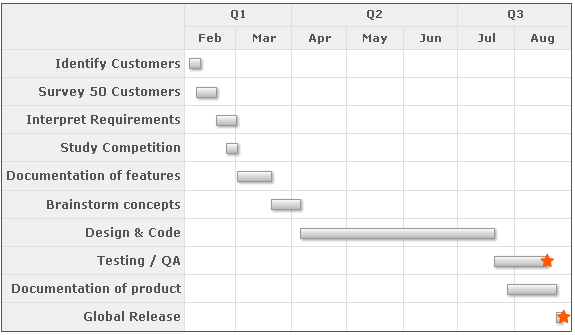
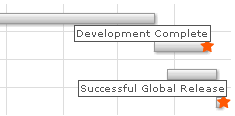

Gantt Chart > Creating Milestones |
Milestones are an important part of the Gantt chart as they allow you to visually depict any crucial dates on the chart. FusionWidgets allows you to create your own milestones on the chart based on date and task i.e., for a given task you can specify milestones on specific dates, and you can customize all the visual properties of the milestone including shape (star or polygon), size and colors. Additionally, you can add tool text and link for the milestone. Here, we'll see how to do the same. |
| Basics |
FusionWidgets allows you to create a milestone based on each task i.e., you can create milestone for each task at the specified date. As such, to create a milestone, you need to have the following ready:
Let's quickly see an example where we add a milestone to one of our previous charts - "Gantt Project Schedule". We'll show two milestones - one to represent Development complete and another one to show Successful global release. The end chart would look as under: |
|  |
| The XML for the same can be listed as under: |
| <chart dateFormat='mm/dd/yyyy' caption='Project Gantt' subCaption='From 1st Feb 2007 - 31st Aug 2007'> <categories> <category start='02/01/2007' end='04/01/2007' label='Q1' /> <category start='04/01/2007' end='07/01/2007' label='Q2' /> <category start='07/01/2007' end='09/01/2007' label='Q3' /> </categories> <categories> <category start='02/01/2007' end='03/01/2007' label='Feb' /> <category start='03/01/2007' end='04/01/2007' label='Mar' /> <category start='04/01/2007' end='05/01/2007' label='Apr' /> <category start='05/01/2007' end='06/01/2007' label='May' /> <category start='06/01/2007' end='07/01/2007' label='Jun' /> <category start='07/01/2007' end='08/01/2007' label='Jul' /> <category start='08/01/2007' end='09/01/2007' label='Aug' /> </categories> <processes fontSize='12' isBold='1' align='right'> <process label='Identify Customers' /> <process label='Survey 50 Customers' /> <process label='Interpret Requirements' /> <process label='Study Competition' /> <process label='Documentation of features' /> <process label='Brainstorm concepts' /> <process label='Design & Code' /> <process label='Testing / QA' /> <process label='Documentation of product' /> <process label='Global Release' /> </processes> <tasks> <task start='02/04/2007' end='02/10/2007' id='TSKIDC' /> <task start='02/08/2007' end='02/19/2007' id='TSKSRC' /> <task start='02/19/2007' end='03/02/2007' id='TSKINR' /> <task start='02/24/2007' end='03/02/2007' id='TSKSTC' /> <task start='03/02/2007' end='03/21/2007' id='TSKDOC' /> <task start='03/21/2007' end='04/06/2007' id='TSKBRS' /> <task start='04/06/2007' end='07/21/2007' id='TSKDSC' /> <task start='07/21/2007' end='08/19/2007' id='TSKTQA' /> <task start='07/28/2007' end='08/24/2007' id='TSKDCP' /> <task start='08/24/2007' end='08/27/2007' id='TSKREL' /> </tasks> <milestones> <milestone date='8/19/2007' taskId='TSKTQA' shape='star' toolText='Development Complete' color='FF5904'/> <milestone date='8/28/2007' taskId='TSKREL' shape='star' toolText='Successful Global Release' color='FF5904'/> </milestones> </chart> |
As you can see above, we've:
The tool tips show up as under: |
|  |